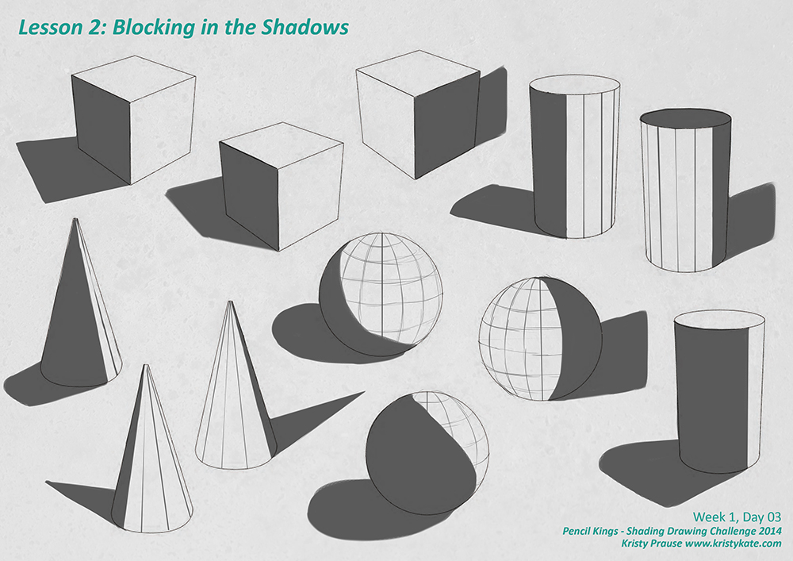
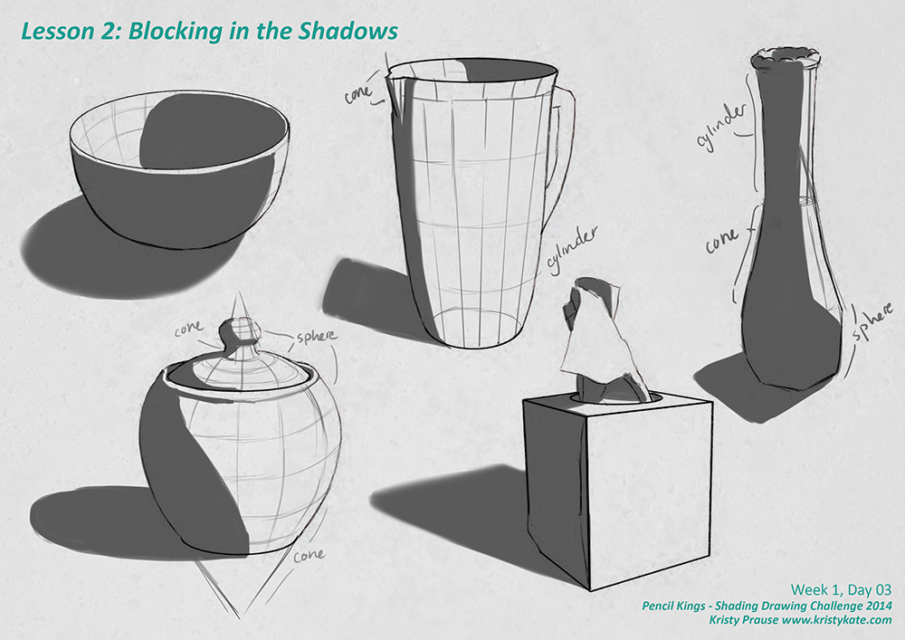
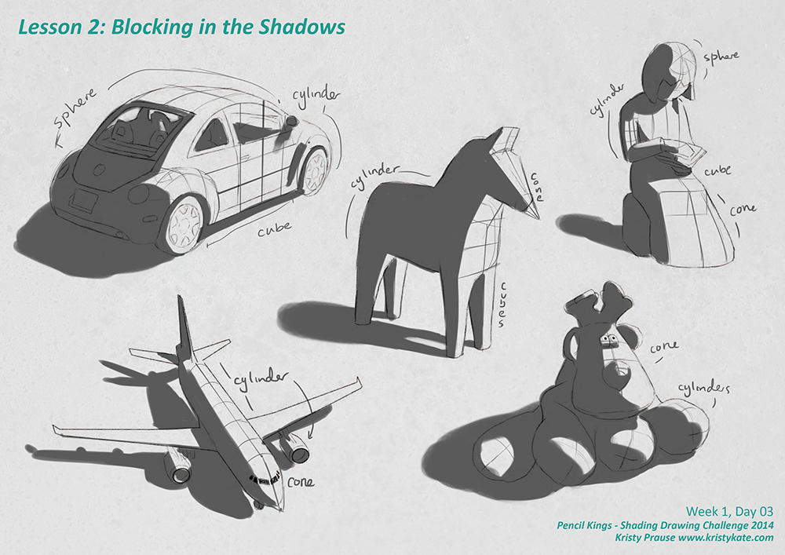
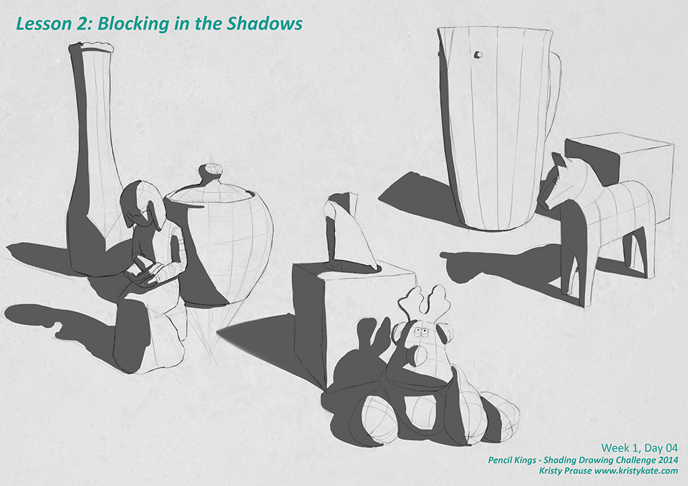

SDC - Planes & Blocking in the Shadow Value
For the month of September I'm taking part in Pencil Kings Shading Drawing Challenge, with instruction from the lovely Diane Kraus. You can see Diane's work on her website www.dianekraus.com.
This post covers my studies from Lesson 2: Blocking in the Shadow. My studies from Lesson 1: Understanding the Value Scale can be viewed in my earlier post Learning Values with the Shading Drawing Challenge (SDC).
+ + +
Seeing Form with Planes
In Lesson 2: Blocking in the Shadow, we explored placing value on simple forms, starting with the cube, cylinder, cone and sphere. Learning to shade the form of these basic shapes is essential to understanding the form of more complex objects. When simplified, all objects are made up of one or a combination of these basic shapes.
Before blocking in the shadow we sketched in the planes of the objects. This is to better understand the form and how light and shadow fall across it.

Hopefully the planes in the above image are fairly self-explanatory, but for reference;
- The Cube has a flat surface. The planes have defined edges, so changes in value are distinct.
- Cylinders and Cones are smooth, rounded forms (not counting their bases). Light and shadow wrap around the form.
- The planes of the Cylinder move straight up and down (indicating how light and shadow appear on the form).
- The planes of the Cone radiate from it's peak to the base (indicating how light and shadow appear on the form).
- The Sphere is a completely rounded form. The planes are laid out like latitude and longitude lines you see on a globe. There are no sharp changes in form, so values blend smoothly, unlike the cube.
After studying these basic shapes, it was time to put them into action by blocking in the shadows on some still life objects.

As you can see, the bowl in the above image is a half sphere and the pot is made up of cones, spheres, and if you imagine lines going from the edges of the lid down to the base, a cylinder too.
The objects can get a bit more complicated (for example, the flattened cone in the dress of the figure below), but the same shading rules still apply.

If you're wondering why the shadows are only one value, it's to establish the separation of light from the shadow area (reiterating from my last post - values from the light range don't appear in the areas of shadow and vice versa).
And to wrap up, blocking in the shadows of a still life set up.

Up next, SDC Lesson 3: Shading Simple Objects.
+ + +
Enjoy art? I'd love to hear from you! Connect with me by leaving a comment or getting in contact via Twitter or Facebook.